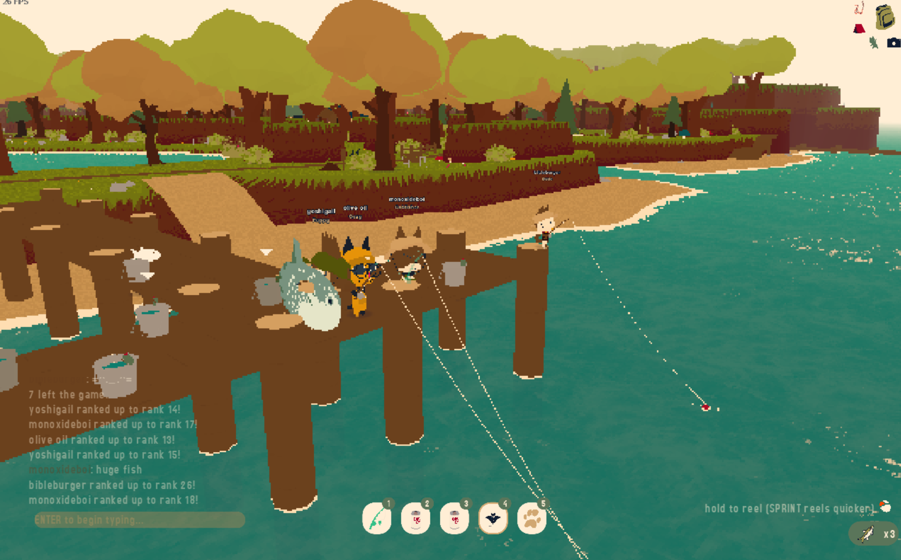
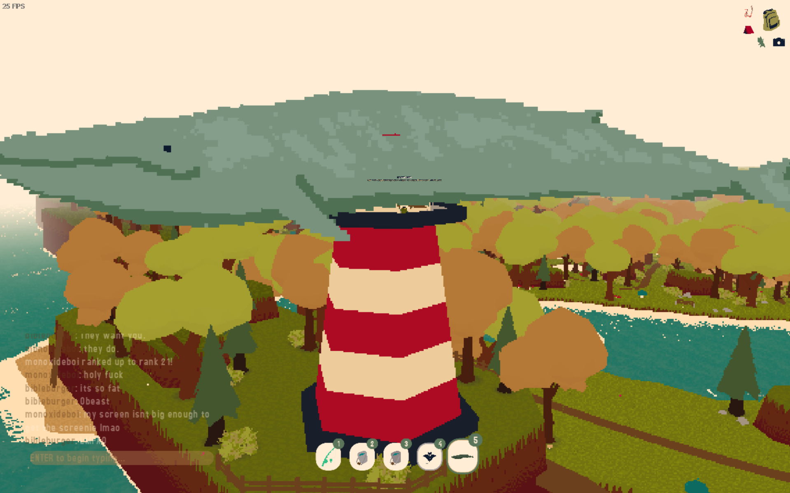
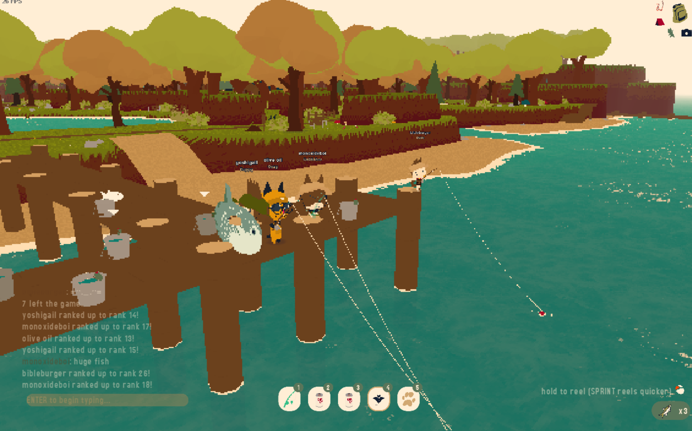
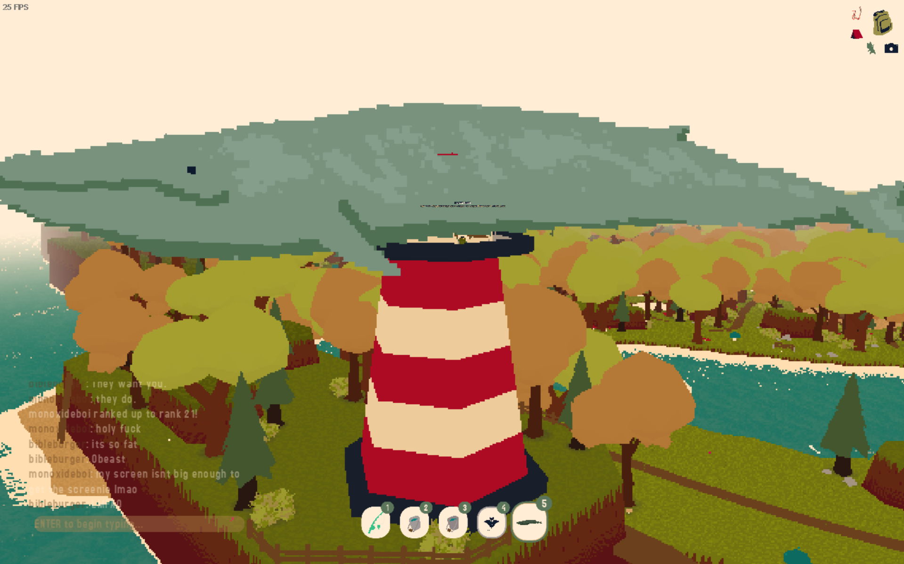

WebfishingWhats up! Its been a while! Ive been absolutely swamped with work and Ive dove headfirst into serverless functions, so thats why I havent made any diary entries lately! Today Im gonna talk about my experience with one of my favorite games, webfishing! If you dont already know, webfishing is a game where you fish. Thats basically it. You can catch all sorts of cool fish and play with your friends if you want! The main appeal of this game is just vibing, I love getting my friends into a vc and just talking. Its a good game to give a group something to do, its a lot less demanding than playing most games! Really lets you chill and put the focus on chatting and getting to know people! Anyways tahts it! I like this game! Ill try to make more of these short entries!  



Comments |